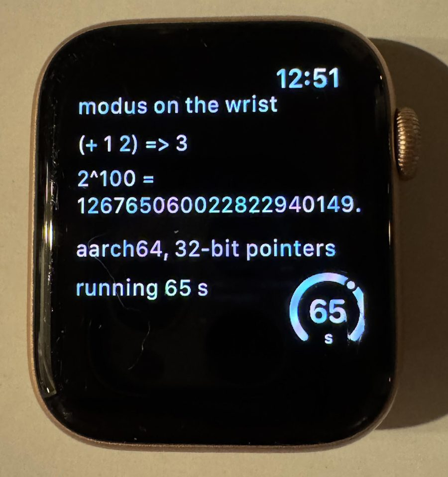

On Wednesday Modus fitted a Lisp REPL into 1,457,039 bytes, 625 short of a
1.44 MB floppy. On Thursday, in MAME’s emulation of a Mac Classic, the Classic’s
own ROM loaded a SCSI driver Modus had written, booted from it, and answered
(sq 12) with 144 on a one-bit screen. By Friday it reached a prompt on a 1 MB
Mac Plus. In between, the same week, it ran on an Apple Watch. The far ends of the hardware
this project targets are now a 1986 Macintosh and a 2020 wristwatch.
mac68k-1mb / 11–14 November
It began with a floppy. Modus already ran on 68k Linux under QEMU; on Wednesday its REPL image became self-unpacking: a raw LZMA decoder written in Lisp with no runtime, 14.3 KB of it, and an 88-byte copier in assembly. The whole thing is 1,457,039 bytes, and a FAT12 floppy holds 1,457,664. That image is still a Linux program, so it fits on a floppy rather than booting from one. The rest of the week made the second half true as well.
The ROM installs the driver (unit 38, drive 14, BootDrive 14), boots, the stream loader
reads through the driver, and the REPL answers on the Classic’s 1-bit screen:
(+ 1 2) => 3, (defun sq ...) => SQ,
(sq 12) => 144.
macclasc
A Classic boots from whatever SCSI disk carries a driver its ROM will load, so Modus wrote
one. It is 68k assembly that installs itself through the Toolbox, turns block reads into
SCSI commands, and keeps evidence of every call for a probe. The bug that held it up is a
period piece: _SCSIDispatch follows Pascal’s calling convention and may
clobber D0–D2, so a driver that kept its error in D1 read garbage until the error moved
to D5. Then came a 2 MB Classic map, a keyboard translator so a Mac Plus types without a
System, and an application: Modus as the startup program under System 6.0.8, with the Mac OS
left underneath it the way the ROM is under a disk boot.
On a 1 MB Mac Plus the prompt arrives in 43 seconds and (+ 1 2) answers
seven seconds later. The first DEFUN ran out of heap. With the threaded JIT,
(fib 20) takes 18 seconds, but a DEFUN costs three to five minutes,
because the compiler pages through a 104 KB code cache.
That is slow, and the repository measured exactly how slow. SMALL.md ran the
two Lisps of the period on the same emulated Classic. Both compile straight to resident 68k
code; Modus compiles to IR, then bytecode, then threaded 68k, with a compiler that pages in
from disk.
| Mac Classic, 68000, 4 MB | MCL 2.0 | Pearl 1.1 | modus |
|---|---|---|---|
defun fib | 0.74 s | 0.25 s | 70 s |
(fib 20) | 1.26 s | 1.63 s | 17 s |
defmacro | 0.50 s | 0.27 s | 69 s |
The measurement also corrected the document’s own note, which had listed MCL 2.0 as needing a 68020: it runs on a 68000. It has 957 of ANSI’s 978 symbols, and all 34 feature probes answer as they do on SBCL. The stated goal is a true hosted REPL — reader, compiler, printer, the whole language — on the LC040 inside MCL 2.0’s budget. All of this is on branches that have not merged, so none of it is in the count above.

3; 2^100 = 126765060022822940149 followed by an ellipsis where the line is cut off; aarch64, 32-bit pointers; running 65 s, beside a 65-second ring.">A watch is an odd 64-bit machine: arm64_32, 64-bit registers with 32-bit
pointers. The commit that got Modus onto one, an Apple Watch SE on watchOS 10.6, made no
compiler change. The image is linked high and placed low, below 2 GB, because
dyld sign-extends anything above that. The shim became clean for 32-bit pointers, thread-local slots shrank to four
bytes, and the fault handlers came out, because watchOS refuses to let an app catch a fatal
signal.
The phone side grew in step. Apps written in Lisp now get native UIKit, the platform’s speech synthesis and recognition, and the GPU through Metal behind calls shaped like WebGPU’s. All of that app code now lives in vessel, new this week. kiln assembles images, and vessel is what runs inside them: the device app, the desktop and its gateway, and the per-device glue. Two commits on the 7th moved about 6,500 lines out of kiln, one titled Nothing in an image comes from kiln.
illatio’s sibling ex-nihilo runs Qwen-Image-2.1-Turbo in Common Lisp. Its prompt encoder, diffusion transformer and decoder are driven by SBCL, with a few CUDA or Metal kernels and no Python or PyTorch. Its README puts a 1024×1024 picture in eight steps at about eleven seconds on an RTX 3090, and 88 on Apple silicon. It renders quoted text as spelled, edits a picture from a prompt, and makes cut-outs with a real alpha channel. Its design notes say how it was built: stable-diffusion.cpp’s implementation was the specification, not a test oracle. Each piece was written first as a numpy reference, then the Lisp was checked against it.
It does not run alone. ex-nihilo sits inside illatio’s server and shares its GPUs: a chat model can lend out its memory while a picture is drawn and take it back after, on NVIDIA and on a Mac. operandi learned to ask for pictures, and to edit one as the prompt says.
conch’s SFTP became a serious client: multiplexed and pipelined, through jump hosts, with several channels on a connection. Transfers got three to five times faster, with 128 chunks in flight. cl-deposits’ red team ran the new re-arm rounds against live soaks, with signatures kept across passes and attacking actors woken and recycled mid-run. glass and glass-webrtc spent the week measuring the Zero’s desktop over conditioned links and public relays, and choosing defaults from the numbers. On x86-64, seal’s AES-GCM now uses AES-NI and carry-less multiplication.
Seven gates were red when this issue was put together, from two causes.
Four were a real bug. On 9 November natrium began asking for
(find-symbol "ADD-RESTORE-HOOK" "MODUS") as it loaded, to register a hook that
only Modus has. On SBCL there is no MODUS package, and FIND-SYMBOL
given a package that does not exist signals an error rather than returning nothing. So
natrium stopped loading on SBCL, and seal, conch and cairn failed with it. The fix looks the
package up first, as the function beside it already did; natrium’s suite passes 74 of
74 on SBCL again.
The other three were the problem of № 32 again. natrium now needs cram, and
folio now needs natrium. The hand-kept lists of siblings that cl-tor and folio clone in CI
were not told, and neither was a job inside cl-deposits’ workflow that clones its own
siblings line by line, where bin/siblings cannot see. Four more lists were just
as stale and still green only because they had not run since; kiln’s lock lacked
illatio and witness, which operandi now requires. All were corrected on the 15th, after the
span closed, so those commits belong to next week’s ledger.
As of publication: 65 repositories, 43 green, none failing, 22 without a workflow.